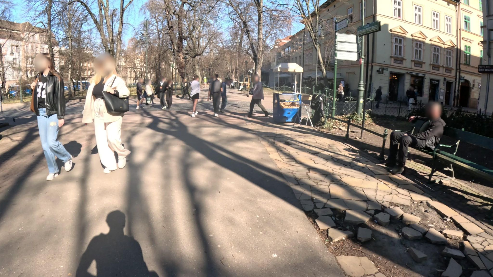
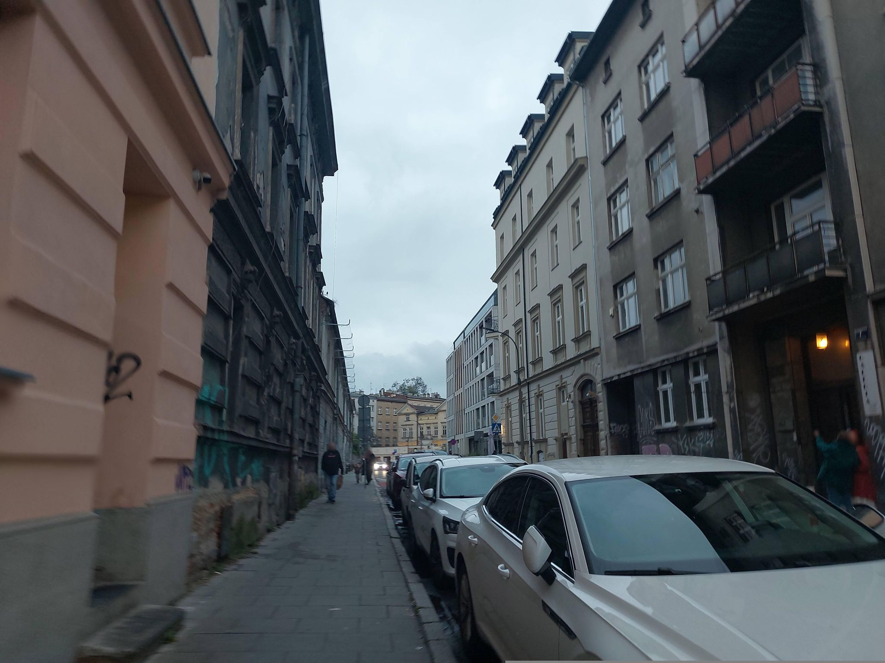
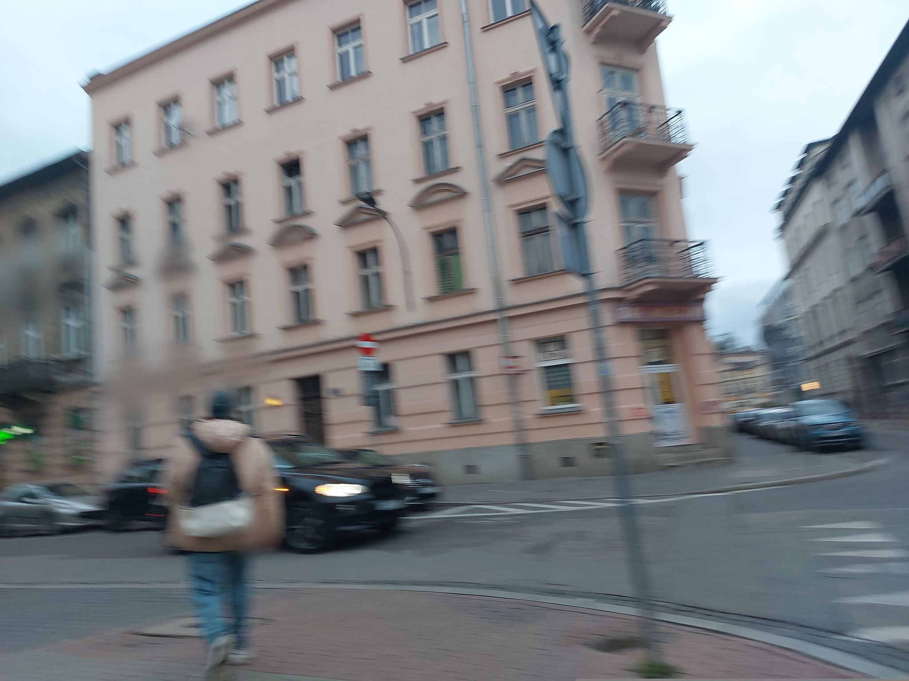
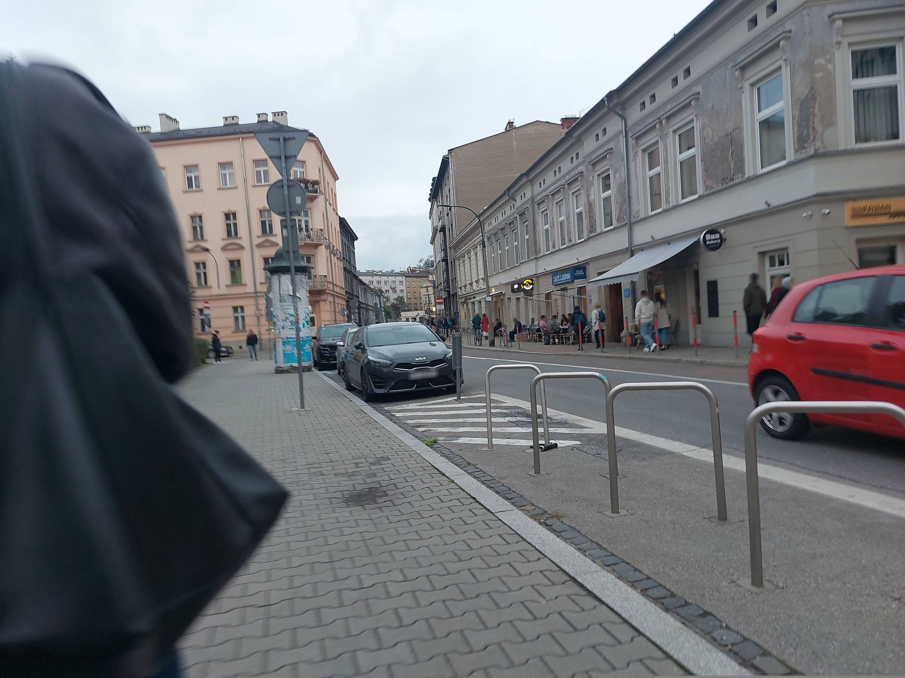
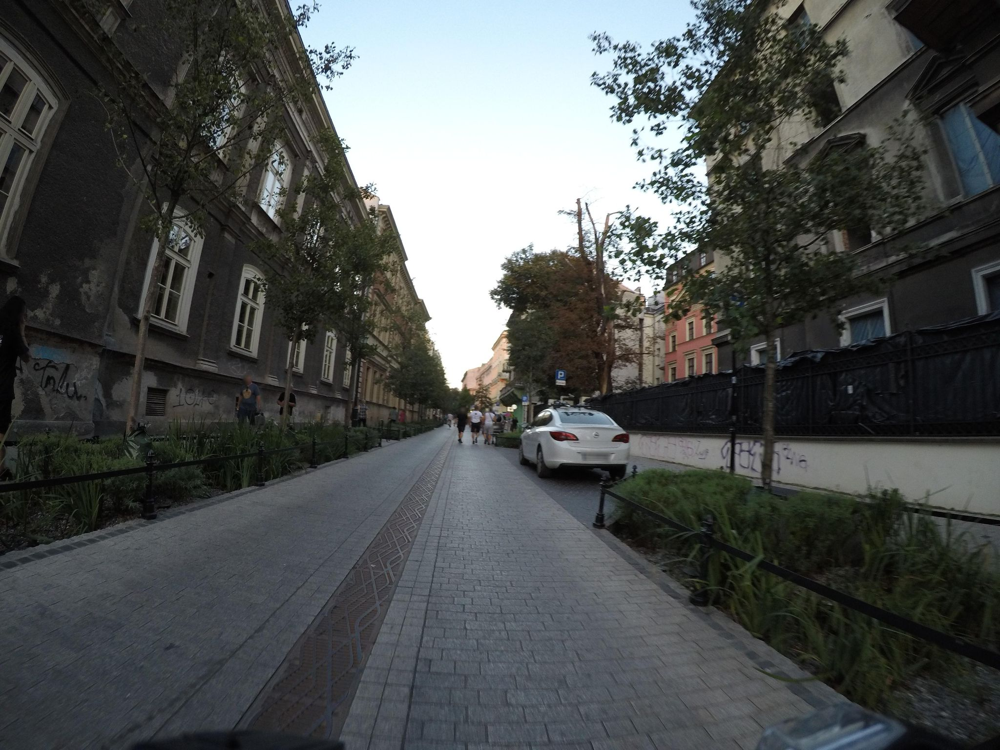
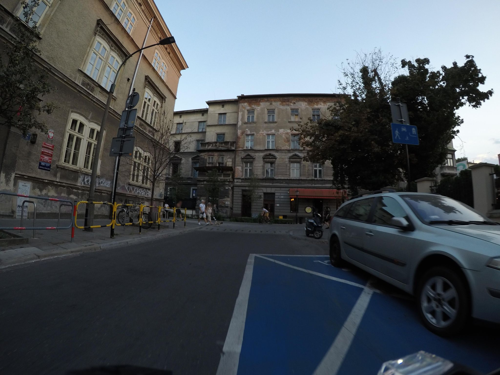
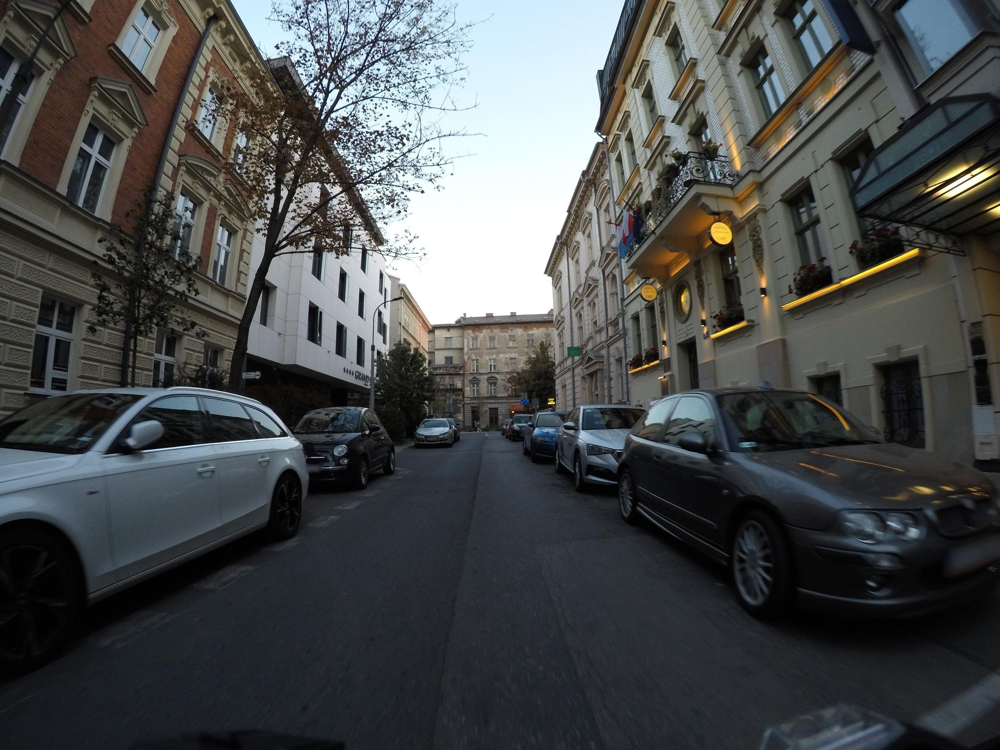
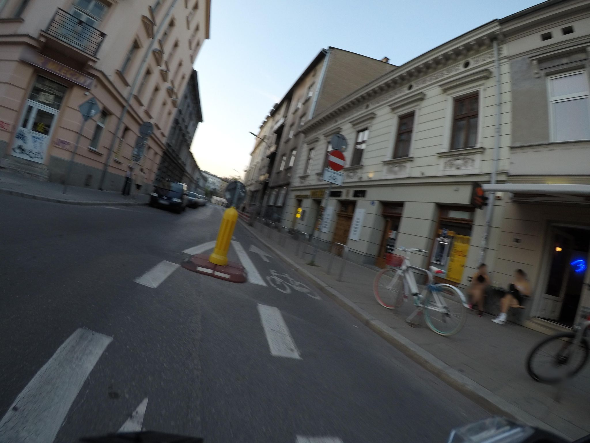
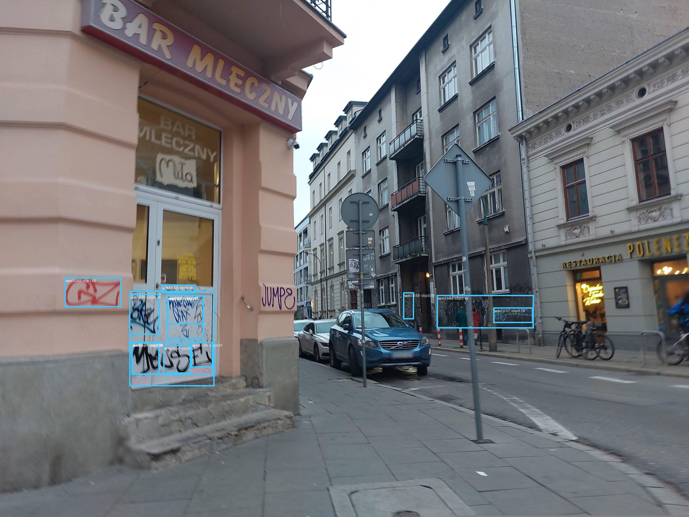

Karmelicka 1, 31-133, Kraków, Dzielnica I Stare Miasto
50.0635222, 19.9329175 · rejon SM I/07
Walk Karmelicka and Królewska through Mapillary. Find graffiti on walls with a local vision model. File anonymous reports to the city's Survey123 endpoint. No camera in hand, no name on the form, no permission asked.
→ open interactive map (471 pins) Google Sheet (471 rows)
Live: krakow-graffiti.pages.dev · Map: krakow-graffiti.pages.dev/map
Kraków has a graffiti problem. Kraków has a form for it. Two things rarely meet.
In late 2025 the Wydział Bezpieczeństwa i Zarządzania Kryzysowego published a Survey123 webform titled Gravvitti_v_1. The form asks for a point on a map, a category, an optional photo, and the type of surface the graffiti sits on. From that point the city's GIS infrastructure derives a district, a Straż Miejska region, a parcel ID, an address. A cleanup crew picks up the rest.
The form has been published. Few people fill it out. Walking around the Stare Miasto on any spring afternoon you see fresh spray paint that nobody has reported and nobody will. The form sits in the gap between the will to clean and the friction of doing it.
This is a small civic robot. It walks the corridor of Karmelicka and Królewska through Mapillary's open imagery, it reads the walls with a local vision model, and it stages reports the city can act on. Every report is anonymous because the form lets it be. Every report can be reviewed before it ships because the cost of a wrong report is real.
193 images at year ≥ 2022, 97 from 2024 or newer, median spacing about 5.6 metres.
The robot does not hold a camera. Mapillary holds the camera. Open crowdsourced imagery, faces and license plates blurred upstream, sequences dense enough to step through the street one frame at a time. Eight points sampled along Karmelicka, southern end at Planty all the way to Rajska:








Faces blurred, plates blurred, the rest fairly true to street-level. Some frames look out at Planty Park and pick up nothing but pedestrians and trees. Some look down the corridor and catch a clear wall. Sample 04 has the obvious scribbles on the left-side facade that the detector still has to learn to find.
An OpenRosa XForm wrapped in a Survey123 webform, sat on an ArcGIS portal at bezpiecznie.um.krakow.pl.
The form package contains an XForm XML, an XLSForm spreadsheet, a webform JSON, and a couple of binary descriptors. Unzipped, it tells you exactly what fields the city wants:
| field | type | required | what it is |
|---|---|---|---|
| Graffitti_v1_point | geopoint | required | map click; lat,lng,alt |
| data_zgloszenia | dateTime | required | now() at submission |
| Graffitti_v1_image | binary | optional | JPEG, ≤ 10 MB |
| rodzaj_graffitti | select1 | optional | brak · bazgroły · mowa nienawiści · mural · inne |
| miejsce_graffitti | select1 | optional | ściana budynku · ogrodzenie · filar mostu · wiata · garaż · inne |
| wsp_x / wsp_y | decimal | required | derived from geopoint |
| nazwa_jednostki | select1 | required | only value: osoba fizyczna |
| adres_mailowy | string | optional | email · left empty for anonymity |
| dzielnica | string | computed | district from pulldata() |
| rejon_sm | string | computed | Straż Miejska region |
| identyfikator_budynku | string | computed | building polygon ID |
| identyfikator_dzialki | string | computed | parcel ID |
| adres | string | computed | reverse-geocoded street + number |
The computed fields are run client-side by the webform via pulldata() calls against five Krakow ArcGIS feature services. The robot calls those same services itself so submissions arrive enriched: a worker opening the report sees a real address, not "click coordinates."
CAPTCHA is disabled in the webform settings. The submission endpoint is the FeatureServer at bezpiecznie.um.krakow.pl/server/rest/services/Graffitti_v1_2/FeatureServer/0/addFeatures. Capabilities advertised:
Query Create Update Uploads Editing no Delete no Sync
Anonymous POSTs succeed. The created_user field stays empty on the server side. The robot can therefore submit without authentication, and the city's audit trail records only the timestamp, not an identity. The price of that openness is irreversibility: once a feature is added, it cannot be deleted, only marked closed with data_zakonczenia and a note in uwagi_sm.
Six modules. One CLI. Each step has an off switch.
The corridor is encoded as a list of waypoints. The walker takes the envelope of those waypoints, tiles it into 0.009-degree squares (Mapillary caps bbox queries at 0.01), and pulls every image. Filters knock out panoramas and anything older than 2022.
Each image goes through the detector. Bounding boxes survive only if the score, the area, and the area-fraction all clear thresholds. The contrast between the masked region and the surrounding wall gives a rough severity bucket. Crops are written to disk for review.
Survivors are enriched: a series of esriSpatialRelIntersects queries against Krakow's GIS services returns district name, Straż Miejska region, building polygon ID when the point sits on one, and parcel ID. A reverse-geocode against Lokalizator_Krakow produces a Polish address string.
Everything lands in SQLite as pending. Nothing leaves the laptop unless you explicitly ask.
The robot's first three geocoded points, exactly as the Krakow Lokalizator returns them.
Karmelicka 1, 31-133, Kraków, Dzielnica I Stare Miasto
50.0635222, 19.9329175 · rejon SM I/07
Karmelicka 23, 31-131, Kraków, Dzielnica I Stare Miasto
50.0657287, 19.9305152 · rejon SM I/07
Rynek Główny 3, 31-042, Kraków, Dzielnica I Stare Miasto
50.0617, 19.9373 · rejon SM I/04 · building ID present
Drawn from the seven Karmelicka waypoints in routes.py, plus the five Królewska waypoints. The dot at Karmelicka 1 is the southern seed; the dot near Karmelicka 23 is the northern seed. Both came from your Google Maps shares.
First plan was facebook/sam3. Meta gated the weights. Second plan was GroundingDINO. Open-vocab boxes, no auth.
The detector reads the image and the phrase graffiti. spray paint. wall tag. street art. at the same time. It returns bounding boxes for what it thinks the text describes. The robot keeps only the boxes that survive three filters at once: a confidence score, a minimum pixel area, and a maximum area fraction (so a single mask covering the entire frame is dropped).
First pass over the eight Karmelicka samples returned zero detections at the default 0.30 confidence threshold. The wall in sample 04 has visible scribbles. The detector silently disagreed. A sweep across five prompt variants and four thresholds is now in data/samples/tune_report.html for human review — too noisy at 0.10, too quiet at 0.30, with a usable middle around 0.15–0.20 for the more specific phrases.
Once a detection clears the gates, the robot constructs a payload:
{
"geometry": { "x": MercatorX, "y": MercatorY,
"spatialReference": { "wkid": 102100 } },
"attributes": {
"data_zgloszenia": <epoch_ms>,
"rodzaj_graffitti": "inne",
"miejsce_graffitti": "sciana budynku",
"wsp_x": <lng>, "wsp_y": <lat>,
"nazwa_jednostki": "osoba fizyczna",
"adres_mailowy": null,
"dzielnica": "Stare Miasto",
"rejon_sm": "I/07",
"identyfikator_dzialki": "PL.PZGiK.307.EGiB ...",
"adres": "Karmelicka 23, 31-131, Kraków, Dzielnica I Stare Miasto"
}
}
This is the JSON that goes to addFeatures. The crop image follows in a second addAttachment POST against the returned objectId. EXIF is stripped before upload. The image is re-encoded at quality 86 with a 1600px max edge.
471 freshest-per-wall entries spread across 8 Kraków districts. Each row is the most recent Mapillary frame showing graffiti at that spot — older frames at the same wall got pruned (the paint may have been cleaned between captures). Queued in store.sqlite, ready for either manual filing or supervised batch send. Nothing submitted to the city.
| district | detections |
|---|---|
| Stare Miasto | 256 |
| Krowodrza | 84 |
| Prądnik Czerwony | 45 |
| Grzegórzki | 28 |
| Podgórze | 27 |
| Zwierzyniec | 16 |
| Dębniki | 11 |
| Prądnik Biały | 4 |
Freshness distribution (capture month of the surviving frame at each wall): 2026: few 2025: 103 2024-10: 123 2024-09: 43 2024-06: 60 (small tail in 2023 and earlier)
| # | address | district |
|---|---|---|
| 25 | Głowackiego 2, 30-085 | Bronowice |
| 22 | Kochanowskiego 14, 31-127 | Stare Miasto · I/07 |
| 18 | Dolnych Młynów 7, 31-124 | Stare Miasto · I/07 |
| 17 | Podgórska 28, 31-536 | Grzegórzki · II/01 |
| 16 | Czysta 1, 31-121 (Bar Mleczny Górnik) | Stare Miasto · I/07 |
| 14 | Michałowskiego 13, 31-126 | Stare Miasto · I/07 |
| 13 | Promienistych 10, 31-481 | Prądnik Czerwony · III/07 |
| 12 | Wrocławska 77, 30-011 | Krowodrza · V/04 |
| 11 | Michałowskiego 15, 31-126 | Stare Miasto · I/07 |
| 10 | Dajwór 19, 31-052 (Kazimierz) | Stare Miasto · I/19 |
The Krupnicza walk surfaced an unbroken graffiti corridor along Dolnych Młynów and Kochanowskiego — cross-streets that the Karmelicka sample never reached. Five distinct addresses in that block each carry 15+ tags. Latest Google Sheet (367 rows).
Pipeline that produced this list: Mapillary corridor walk → GroundingDINO with score≥0.20 → aspect/std geometric gates → CLIP second-stage classifier rejecting road signs, lamp posts, windows, and trees → pulldata()-equivalent civic enrichment → reverse-geocode against Krakow's Lokalizator. Zero false positives in this batch.

| id | crop | lat / lng | score · sev · CLIP | address (geocoded) |
|---|---|---|---|---|
| 5a1c6da1 |  |
50.06390 19.92761 |
0.32 · minor · 0.91 | Czysta 1, 31-121, Kraków Dzielnica I Stare Miasto · rejon SM I/07 |
| 25153c1a |  |
50.06393 19.92761 |
0.24 · moderate · 0.94 | Czysta 1, 31-121, Kraków Dzielnica I Stare Miasto · rejon SM I/07 |
| 85d19b08 |  |
50.06393 19.92761 |
0.23 · minor · 0.77 | Czysta 1, 31-121, Kraków Dzielnica I Stare Miasto · rejon SM I/07 |
| e1ea4811 |  |
50.06390 19.92761 |
0.23 · minor · 0.72 | Czysta 1, 31-121, Kraków Dzielnica I Stare Miasto · rejon SM I/07 |
| 5d89ccbc |  |
50.06390 19.92761 |
0.21 · moderate · 0.98 | Czysta 1, 31-121, Kraków Dzielnica I Stare Miasto · rejon SM I/07 |
What the FeatureServer would receive for entry 5a1c6da1 if you authorised the live submit:
{
"geometry": {
"x": 2218315.6,
"y": 6457350.7,
"spatialReference": { "wkid": 102100 }
},
"attributes": {
"data_zgloszenia": 1779902113000,
"rodzaj_graffitti": "inne",
"miejsce_graffitti": "sciana budynku",
"wsp_x": 19.92761, "wsp_y": 50.06390,
"nazwa_jednostki": "osoba fizyczna",
"adres_mailowy": null,
"dzielnica": "Stare Miasto",
"rejon_sm": "I/07",
"identyfikator_dzialki": "PL.PZGiK.307.EGiB - 9938...",
"adres": "Czysta 1, 31-121, Kraków, Dzielnica I Stare Miasto"
}
}
Plus a separate addAttachment POST carrying the crop JPEG (EXIF stripped, re-encoded at quality 86). Both calls go anonymously over HTTPS to bezpiecznie.um.krakow.pl/server/rest/services/Graffitti_v1_2/FeatureServer/0.
uv run krakow-clean submit --live --confirm-token=WYSLIJ --limit 1 to send the highest-scoring entry. The double-gate prevents accidental sends.Dajwór 19 (corner with Józefa) — a weathered building covered in stickers, scribbles, and tags. Six detections survive the filter chain, including the "ofles" tag, the black scribble cluster around the right door, and the sticker bands.

For manual filing or hand-off:
data/runs/20260528-132229/proposed.jsonl — raw JSON, one entry per line.data/queue_gallery.html — per-source-image overlay JPEGs.data/images/crops/ — EXIF-stripped crops ready for attachment upload.12 Old Town routes walked end-to-end via parallel SAM3+CLIP (3 workers, 16 min wall time). Plus the earlier Karmelicka and Kazimierz walks.
| route | detections kept | note |
|---|---|---|
| Karmelicka | 117 | full corridor, Bar Mleczny corner + 8 sub-hotspots |
| Krupnicza | 120 | new big hotspot zone — Dolnych Młynów + Kochanowskiego cross-streets |
| Floriańska | 53 | surprise — main pedestrian axis had tags after all |
| Kazimierz (Józefa + Estery) | 16 | Dajwór block, classic street-art corner |
| św. Anny | 5 | side passage |
| św. Jana | 4 | side passage |
| św. Tomasza | 3 | side passage |
| Szewska · Mikołajska | 1 each | nearly clean |
| Grodzka · Sienna · Bracka · Reformacka · Sławkowska | 0 each | main-axis pedestrian streets — clean |
The pattern is now obvious from real data: tourist-axis pedestrian streets (Grodzka, Bracka, Sławkowska, Sienna, Reformacka) stay clean. Side corridors (Krupnicza, Karmelicka, Dolnych Młynów, Kochanowskiego) and old-quarter blocks (Dajwór) accumulate the paint.
| stage | detections after parallel wide-Old-Town walk |
|---|---|
| GroundingDINO raw, score≥0.20 (initial) | noisy: lamp posts, road signs included |
| + aspect ≥ 0.45, std ≥ 16, area gates | ~120 |
| + CLIP 10-label classifier (DINO path) | 20 across the original sample |
| SAM3 (mlx) via Python 3.13 sidecar, score≥0.50 | ~600 raw |
| + same area gates + CLIP filter + pHash dedup | 367 form-ready (SAM3 hybrid, current default) |
SAM3 has higher recall and ships tighter bounding boxes; CLIP catches its sticker / window / sign mis-classifications. The combined pipeline runs SAM3 on Apple Silicon MLX (~650 ms per image) plus CLIP on each surviving crop (~200 ms). Sidecar architecture: vendor/mlx_sam3 has its own Python 3.13 + mlx uv env that the main project (3.12 + torch) shells out to via JSON on stdout. Parallelised via ProcessPoolExecutor (3 workers on M-series — GPU contention dominates above that despite the 128 GB RAM available).
Two corners where the corridor's graffiti density clusters. Both embeds use Mapillary's open imagery — no Google API key, no tracking.
Bar Mleczny Górnik corner. Twelve detections survive the SAM3 + CLIP pipeline. Visible tags include the red "GZ" (now correctly bounded after a colour-std fix), the purple "JUMP8" on the central column, and the dense black-paint cluster around the doorway.
Five detections survive on this frame, including the "ofles" tag at the top-right and the sticker cluster around the doorway. Eleven detections on the same address across two camera positions.
The SAM3 + CLIP boxes drawn back onto the source images. Cyan boxes survived the hybrid pipeline; each was confirmed by a CLIP zero-shot classifier against ten labels.
The same locations work in Google Street View via the Maps Embed API. Set GOOGLE_MAPS_EMBED_KEY in .env and the iframes upgrade to Google panoramas:
https://www.google.com/maps/embed/v1/streetview?key={KEY}
&pano=cOWQfljzovXbiaTgkkj2mA
&heading=337&pitch=0&fov=80
The panoIDs from your initial Google Maps shares already work as pano= parameters. Without a key, Mapillary is the no-cost path.
A screenshot from the Playwright dry-fill caught something the static schema missed.
The XForm definition declares captcha.isEnabled = false. The live webform disagrees. After uploading a photo and starting to fill the categories, the form reveals an image CAPTCHA labelled "Wpisz tekst":

This confirms the architectural choice. Submitting through the webform would require solving an image CAPTCHA every time — either by OCR or by interrupting the human in the loop. Submitting through the FeatureServer's addFeatures endpoint bypasses the webform entirely; the captcha is enforced by JavaScript in the user-facing form, not by the underlying REST API.
The robot therefore uses the REST path. The browser dry-fill exists only to verify that, if you ever wanted to submit through the user-facing form, the schema mapping would round-trip correctly.
Anonymity here is not a network trick. It is the form's design and what you choose to send.
The city's portal logs the request like any web server: timestamp, source IP, user agent. The robot does not route through Tor or a VPN by default — that was your call. What the robot does instead is:
adres_mailowy empty. There is no other PII field on the form.Accept-Language: pl-PL,pl;q=0.9,en;q=0.7 and Referer: survey123.arcgis.com so traffic blends with the webform.Server-side, the created_user column comes back empty on anonymous adds. The audit trail records a timestamp and that's it. If a network-level anonymity layer is wanted later, it slots into submit.py as a single httpx proxy argument.
A misfired report is a real worker driving to a wall that is not there.
The first wire-format test sent a single feature to coordinates in the middle of the Vistula River with rodzaj_graffitti=brak. The endpoint accepted it (HTTP 200, objectId 15232). The record landed in the city's "Graffiti nowe" queue. We could not delete it — the FeatureServer's Delete capability is disabled. The only available remedy was updateFeatures with data_zakonczenia set to now() and an explanation in uwagi_sm:
BLAD AUTOMATYCZNEGO TESTU API - PROSZE ZAMKNAC. Test wire-format wykonany 2026-05-27 przed deploymentem narzedzia do zglaszania graffiti. Wspolrzedne wskazuja srodek rzeki Wisly. Przepraszamy za szum.
One stray record was enough to teach the lesson. From that point on the rules became:
walk only detects and queues. It never POSTs.mock renders proposed payloads to data/runs/<ts>/proposed.jsonl for review.submit requires both --live AND --confirm-token=WYSLIJ. Without the token it stays dry.This is what gradual looks like: the system never sends without an explicit, typed, in-Polish confirmation. The robot is good at counting walls. It is not allowed to be the one to decide.
Python 3.12, uv-managed, MPS on Apple Silicon, no cloud.
| module | role | key deps |
|---|---|---|
| walker.py | Mapillary Graph API, bbox tiling, image refs | httpx · pyproj |
| vision.py | GroundingDINO, score/area gates, severity | transformers · torch (mps) |
| enrichment.py | Krakow GIS spatial queries + Lokalizator | httpx |
| formspec.py | XForm payload (OpenRosa fallback) | stdlib |
| submit.py | addFeatures + addAttachment, UA rotation | httpx · pyproj |
| dedup.py | SQLite queue, 30m/30d spatial cooldown | sqlite3 |
| pipeline.py | walk + detect + enqueue orchestration | imagehash · rich |
| cli.py | typer entry points with safety gates | typer · rich |
uv sync uv run krakow-clean probe --route karmelicka uv run krakow-clean walk --route karmelicka --max-images 30 uv run krakow-clean mock --limit 5 uv run krakow-clean status uv run krakow-clean submit --live --confirm-token=WYSLIJ --limit 1
Source is at /Users/stas/Playground/clean-krakow. Spec at docs/specs/2026-05-27-krakow-graffiti-reporter-design.md. The eight sample images and detection sweep live in data/samples/.